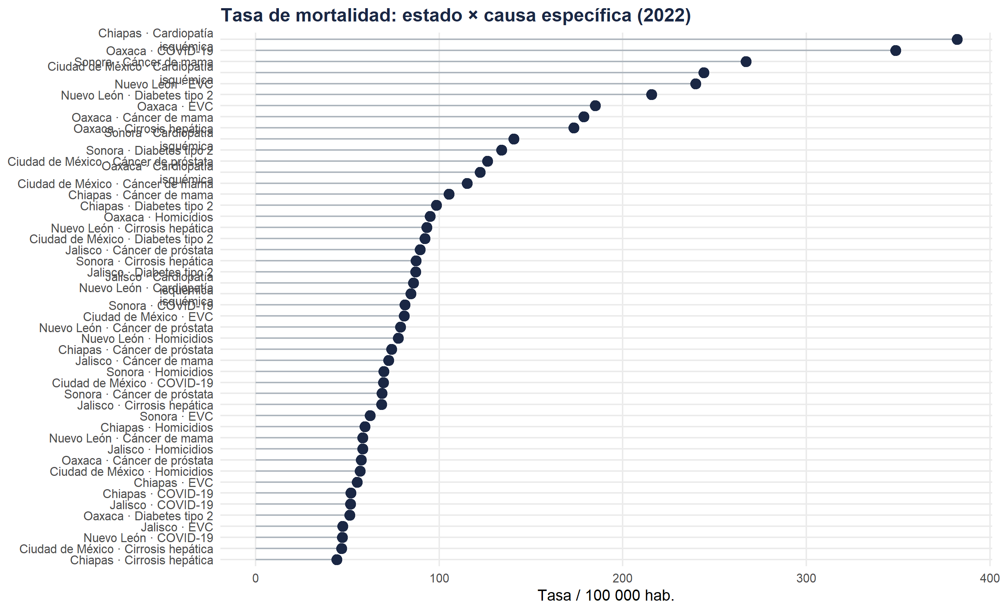

Bloque A · Nivel 5 — Articulación fina salud-territorio
Fecha de publicación
15 de abril de 2026
Bloque A · Nivel 5Variables : year · sex · state · cause_specific
Introducción
Este nivel representa la máxima resolución analítica del Bloque A. La combinación de causa específica y entidad federativa permite detectar configuraciones locales únicas : excesos de mortalidad por causas particulares en estados específicos, variaciones de género sub-estatales, etc.
mort5|>filter(year==2022)|>group_by(state,cause_specific)|>summarise(rate=mean(rate),.groups="drop")|>mutate(cause_specific=str_wrap(cause_specific,18))|>ggplot(aes(x=rate, y=reorder(paste(state,cause_specific,sep=" · "), rate)))+geom_segment(aes(xend=0, yend=paste(state,cause_specific,sep=" · ")), color="#adb5bd")+geom_point(color="#1a2744", size=3)+labs(title="Tasa de mortalidad: estado × causa específica (2022)", x="Tasa / 100 000 hab.", y=NULL)+theme_minimal(base_size=10)+theme(plot.title=element_text(face="bold",color="#1a2744"),panel.grid.minor=element_blank())

Figura 1
Código
mort5|>filter(year==2022)|>group_by(state,sex,cause_specific)|>summarise(rate=mean(rate),.groups="drop")|>pivot_wider(names_from=sex,values_from=rate)|>mutate(ratio=Hombre/Mujer, cause_specific=str_wrap(cause_specific,16))|>ggplot(aes(x=ratio, y=reorder(cause_specific,ratio), fill=state))+geom_col(position="dodge",width=0.65,alpha=0.85)+geom_vline(xintercept=1,linetype="dashed")+facet_wrap(~state, ncol=3)+scale_fill_brewer(palette="Set2")+labs(title="Ratio H/M por causa específica y estado (2022)", x="Ratio Hombre/Mujer",y=NULL)+theme_minimal(base_size=9)+theme(legend.position="none", plot.title=element_text(face="bold",color="#1a2744"), strip.text=element_text(face="bold"))
---title: "⑤ Máxima desagregación — Estado × Causa específica"subtitle: "Bloque A · Nivel 5 — Articulación fina salud-territorio"date: todaylang: es---<span class="badge-nivel">Bloque A · Nivel 5</span>**Variables** : `year` · `sex` · `state` · `cause_specific`## IntroducciónEste nivel representa la **máxima resolución analítica** del Bloque A.La combinación de causa específica y entidad federativa permite detectarconfiguraciones locales únicas : excesos de mortalidad por causas particularesen estados específicos, variaciones de género sub-estatales, etc.---```{r setup-a5, include=FALSE}library(tidyverse); library(scales)set.seed(99)cause_spec <-c("Cardiopatía isquémica","EVC","Cáncer de mama","Cáncer de próstata","Diabetes tipo 2","Cirrosis hepática","Homicidios","COVID-19")states_sel <-c("Ciudad de México","Jalisco","Nuevo León","Chiapas","Oaxaca","Sonora")mort5 <-expand.grid(year=2000:2022, sex=c("Hombre","Mujer"),state=states_sel, cause_specific=cause_spec) |>mutate(deaths=rpois(n(),lambda=80+10*(year-2000)+ifelse(sex=="Hombre",30,0)+case_when(cause_specific=="Cardiopatía isquémica"~200, cause_specific=="Diabetes tipo 2"~150, cause_specific=="Homicidios"~100,TRUE~30)),rate=deaths/runif(n(),5e4,1e6)*1e5)```## Análisis combinado::: {.panel-tabset}#### Perfil estado × causa```{r fig-lollipop-a5}mort5 |>filter(year==2022) |>group_by(state,cause_specific) |>summarise(rate=mean(rate),.groups="drop") |>mutate(cause_specific=str_wrap(cause_specific,18)) |>ggplot(aes(x=rate, y=reorder(paste(state,cause_specific,sep=" · "), rate))) +geom_segment(aes(xend=0, yend=paste(state,cause_specific,sep=" · ")),color="#adb5bd") +geom_point(color="#1a2744", size=3) +labs(title="Tasa de mortalidad: estado × causa específica (2022)",x="Tasa / 100 000 hab.", y=NULL) +theme_minimal(base_size=10) +theme(plot.title=element_text(face="bold",color="#1a2744"),panel.grid.minor=element_blank())```#### Disparidades de género```{r fig-gender-a5, fig.height=7}mort5 |>filter(year==2022) |>group_by(state,sex,cause_specific) |>summarise(rate=mean(rate),.groups="drop") |>pivot_wider(names_from=sex,values_from=rate) |>mutate(ratio=Hombre/Mujer, cause_specific=str_wrap(cause_specific,16)) |>ggplot(aes(x=ratio, y=reorder(cause_specific,ratio), fill=state)) +geom_col(position="dodge",width=0.65,alpha=0.85) +geom_vline(xintercept=1,linetype="dashed") +facet_wrap(~state, ncol=3) +scale_fill_brewer(palette="Set2") +labs(title="Ratio H/M por causa específica y estado (2022)",x="Ratio Hombre/Mujer",y=NULL) +theme_minimal(base_size=9) +theme(legend.position="none",plot.title=element_text(face="bold",color="#1a2744"),strip.text=element_text(face="bold"))```:::---::: {.callout-note icon="false"}**Fin du Bloc A — Prochaine étape** Pour explorer la dimension spatiale avec cartographie, passer au[Bloque B — ② bis · Análisis por Estados](B2_espacial_estados.qmd).:::## Navigation::: {style="display:flex; justify-content:space-between; margin-top:2rem;"}[← ④ Dimensión territorial](A4_territorial.qmd){.btn .btn-outline-secondary}[→ Bloque B · Análisis espacial](B2_espacial_estados.qmd){.btn .btn-primary}:::